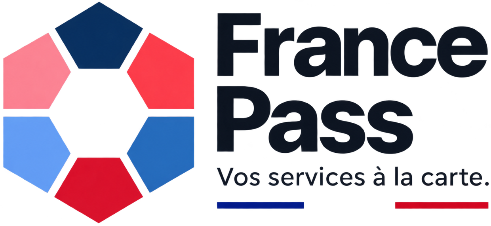
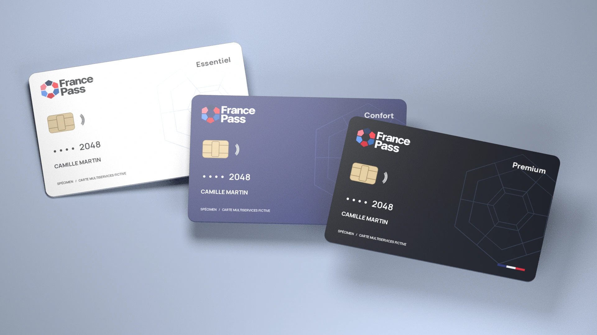

Studio Ludo.
Studio Ludo.Faire réagir ↓
Interpeller. Faire hésiter le passant entre une offre qui paraît familière et un prix qui, dans ce contexte, dérange.
Stratégie créative · Campagne 360°
Les impôts, on voit très bien ce qu’ils coûtent. Mais si, demain, chacun devait financer seul son quotidien ? J’ai pris au mot ce défi publicitaire : donner envie de ce qu’on préférerait ne jamais payer.
Stratégie créative
Pour donner à voir ce que finance un prélèvement, j’ai imaginé la facture qui le remplacerait. La salle de classe aurait un abonnement sans publicité, le guichet une file prioritaire et la consultation un panier à valider.
Big Idea · Du citoyen au client

J’ai créé France Pass pour donner un visage à ce système. Sa promesse est simple : chacun compose ses services publics à la carte. Son modèle emprunte aux néobanques et aux plateformes à abonnement. Au guichet, à l’école ou à l’hôpital, les droits d’un client dépendent désormais de la formule qu’il a choisie.
Identité de marque
Essentiel, Confort ou Premium. Devant un même lecteur de carte, la formule choisie change les conditions d’accès.

Stratégie de campagne
Interpeller. Faire hésiter le passant entre une offre qui paraît familière et un prix qui, dans ce contexte, dérange.
Éprouver la différence. Mettre chacun devant sa propre facture pour mesurer les arbitrages qu’imposerait un financement individuel.
Éclairer le choix collectif. Expliquer comment partager le coût entre de nombreuses personnes permet d’accéder à un service au moment où on en a besoin.
Faire réagir · Affichage et films
Une file rapide au guichet semble presque raisonnable. Jusqu’à ce qu’on regarde qui reste dans l’autre file. Six affiches empruntent aux marques leurs façons de vendre, puis déplacent le regard vers le service concerné.
Films publicitaires · Storyboards
Dans cet hôpital, les fournitures nécessaires à une intervention sont à la charge du patient. Du comptoir à la caisse, le film suit les gestes ordinaires des courses dans un lieu où devoir remplir un panier change tout.
En cours de géométrie, le professeur dépend d’une plateforme financée par des annonceurs. La classe essaie de suivre le fil de la démonstration.
Faire vivre · Plateforme interactive
Choisissez une formule et un foyer, puis essayez une consultation ou l’emprunt d’un livre. Chaque décision apparaît dans le portefeuille et sur la facture. La projection annuelle donne une autre échelle au prix affiché par mois.
Essayer le simulateur ↗Faire vivre · Activation en gare
En gare, France Pass propose un marché au voyageur : son temps d’attention contre un titre de transport. La borne diffuse trois annonces de quinze secondes, du tirage au sort pour une place en crèche aux jours Fast Pass, puis à l’abonnement Premium sans publicité. À vous de décider si le trajet vaut les 45 secondes.
Faire comprendre · Social media
Chaque série commence comme une publication commerciale. En faisant défiler les cinq images, on passe de la promesse publicitaire au fonctionnement réel du service qu’elle détourne.
Derrière le prix barré, distinguer remboursement et remise commerciale.
Faire sentir comment une minute facturée peut décourager une demande d’aide.
Relier des générations qui contribuent à la scolarité les unes des autres.
Déploiement 360° · Scénario envisagé
Découvrir
Le menu Santé près de l’hôpital, le Fast Pass Administration près du guichet, l’offre Habitat et solidarité près des lieux d’accompagnement. L’affiche prend son sens là où l’on attend le service.
Expérimenter
En gare, la borne Mobilité échange un trajet contre du temps. Dans le simulateur, une intervention Protection et secours fait apparaître le coût d’un imprévu.
Comprendre
Sur les réseaux sociaux, une famille découvre qui contribue à l’Éducation de son enfant. Les séries Santé et Administration décryptent à leur tour le prix barré et l’appel surtaxé.
Présenter les formules à la manière des nouvelles offres de janvier.
Pendant la déclaration de revenus, déployer les affiches, ouvrir le simulateur et installer la borne.
Proposer le trajet contre publicité en gare.
Diffuser le film du cours sponsorisé et le parrainage scolaire.
Mettre en avant la promotion Fast Pass.
Transformer les manuels scolaires en cadeaux de Noël.
Conclusion
Une affiche fait lever un sourcil. Une facture oblige à choisir. Un carrousel révèle qui partage aujourd’hui la dépense. En faisant réagir, vivre puis comprendre, France Pass ramène les impôts à une question concrète : le jour où l’on a besoin de soins, d’une école ou de secours, a-t-on vraiment envie de choisir sa formule ?
Projet fictif imaginé par Studio Ludo. Les offres et leurs tarifs relèvent de la fiction. Cette campagne n’a pas été déployée.